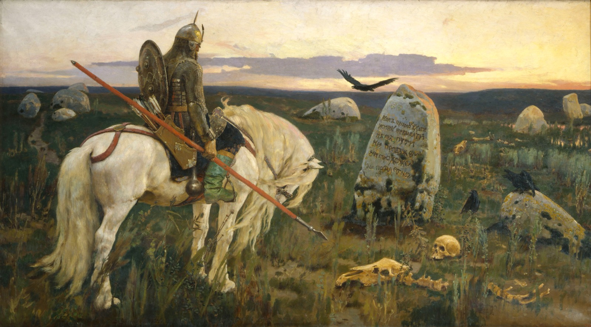
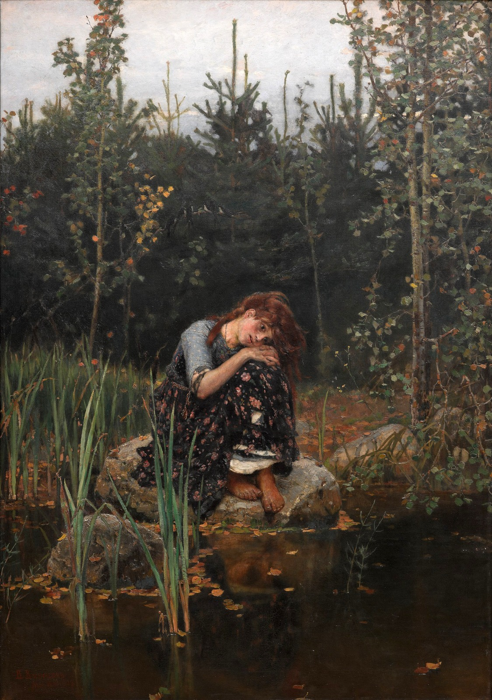
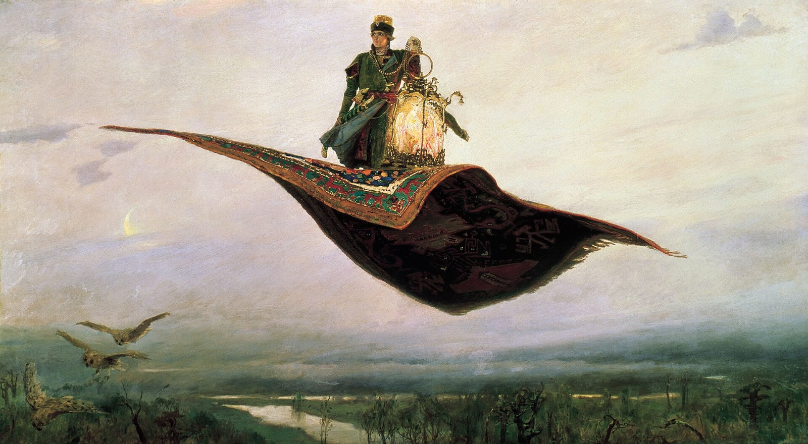
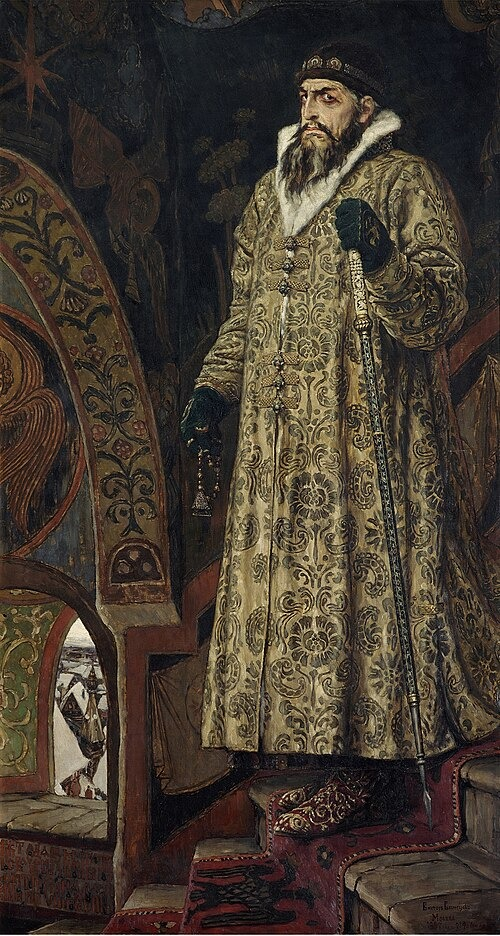
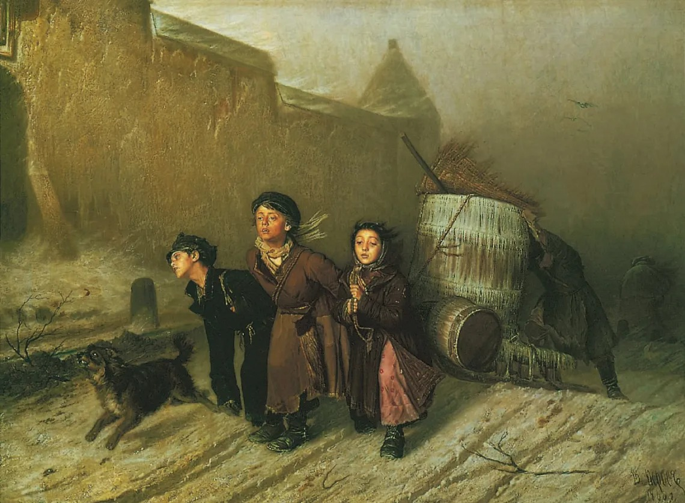

Embark on your journey to master the Russian language! Learn to differentiate Russian Cyrillic from similar scripts like Ukrainian and Mongolian, and gain the ability to read both pre-reform and post-reform Russian texts. Build a strong foundation for fluency and cultural understanding.




Connect with fellow learners, get updates on the A1 Russian Course, and engage in discussions about the Russian language!
Join NowMany assume Cyrillic is impossible to learn, but it's actually phonetic and consistent. With just 33 letters, you can read Russian words after a few hours of practice.
Yes, Russian has cases and aspects, but they're logical patterns. English has irregular verbs too - Russian grammar is just more systematic.
Russian pronunciation is straightforward once you learn the rules. No silent letters or unpredictable sounds - what you see is what you say.
Language learning includes culture, and Russian culture is rich and fascinating. This "difficulty" is actually an opportunity for deeper understanding.
Did you know that the Russian Empire was officially established in 1721 by Tsar Peter the Great? This marked the beginning of a vast empire that would become the largest contiguous land empire in history, stretching from the Baltic Sea to the Pacific Ocean.
Russia has been shaped by two major empires that dominated its history and influenced the world. The first was the Russian Empire, which emerged from the Grand Duchy of Moscow and expanded under the Romanov dynasty. It was a vast, multi-ethnic state that spanned Eastern Europe and Asia, known for its autocratic rule, serfdom system, and significant cultural and military achievements. The empire played a crucial role in European politics and was a major power during the Napoleonic Wars and World War I.
The second major empire was the Soviet Union, established after the Russian Revolution of 1917. As a communist state, it promoted socialism and became a superpower during the Cold War, rivaling the United States. The USSR was characterized by centralized planning, industrialization, and space exploration achievements, but also by political repression and economic challenges. It dissolved in 1991, leading to the formation of modern Russia and other independent states.